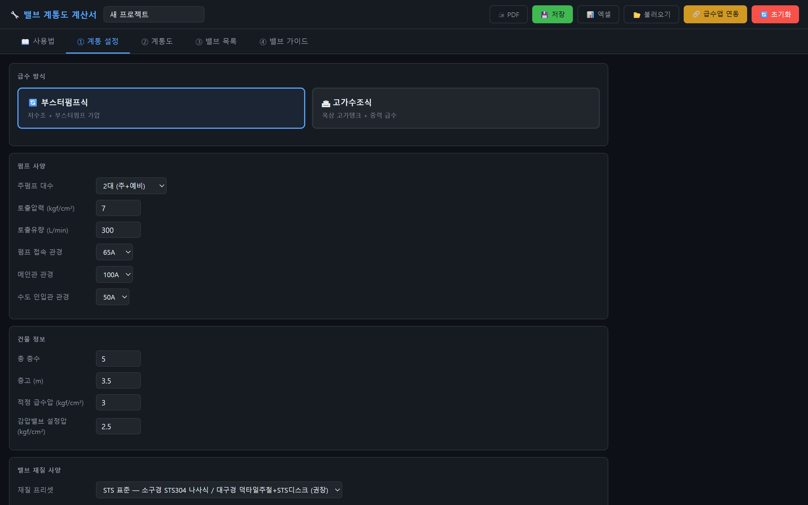
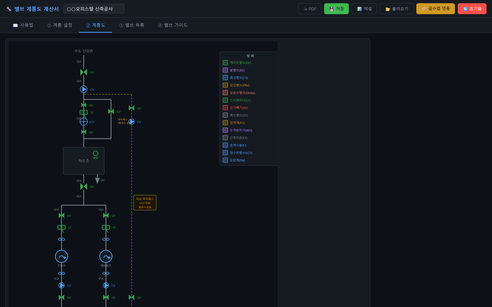
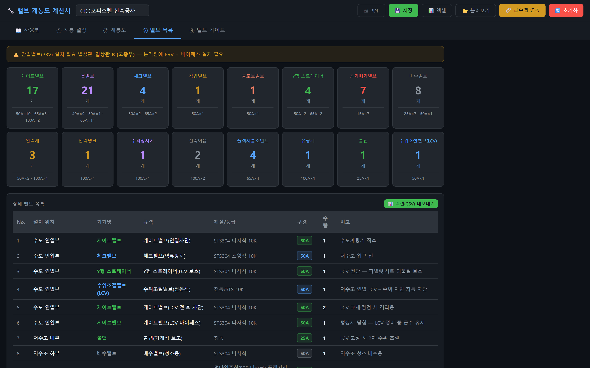

밸브 계통도 계산서
계통 설정 → 계통도 → 밸브 목록 → 밸브 가이드. 도면과 수량 산출서가 따로 놀던 시절은 여기서 끝납니다.
계통도와 밸브 목록이 한 몸이면, 어긋날 수가 없습니다.
무엇이 대체되나
① 계통 설정
급수 방식(부스터펌프 / 고가수조)을 고르고 입상관을 추가하면, 관경과 담당층에서 감압밸브 필요 여부가 자동으로 판정됩니다. 층별 주관과 화장실을 붙이면 그 수만큼 차단 볼밸브가 잡힙니다.

🔍 클릭하면 크게 볼 수 있습니다
층별 압력 · 감압비
자동 판정
PRV 대상 표시
재질 프리셋
STS 기본
사양별 일괄 변경
② 계통도
수도 인입관 · 저수조 · 주펌프 · 예비펌프 · 비상 바이패스까지 실제 계통도가 그려집니다. 밸브 기호는 범례 14종이 함께 표시되어, 그대로 발주처 협의 자료로 씁니다.

🔍 클릭하면 크게 볼 수 있습니다
게이트 · 체크 · 감압 · 스트레이너
범례 14종
기호와 명칭 함께
토출측 밸브 순서
표준 배열
펌프 → FJ → CV → GV
③ 밸브 목록
설치 위치 · 규격 · 재질 · 구경 · 수량이 표로 정리되고 엑셀(CSV)로 내려받습니다. 계통도와 목록이 한 몸이라 납품 직전에 수량이 어긋날 일이 없습니다.

🔍 클릭하면 크게 볼 수 있습니다
구경별 집계
엑셀 1회
CSV 내려받기
위생배관 관경 계산서
연동
계산 결과 이어받기
작동 모습
연출된 시연 장면입니다. 실제로 그려보려면 무료로 바로 쓰기.